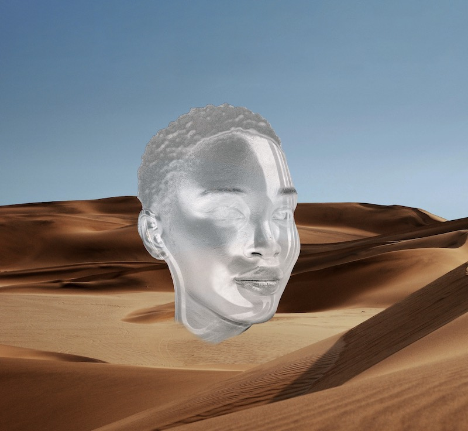

We need to do better
Black youth are at high risk for life dissatisfaction, which is illustrated by disproportionately high suicide rates in the last 20 years (Price and Khubchandani, 2019). We grow in a society designed to make us limited, broken, and “under control” economically, sociologically, politically, and psychologically. Our environment challenges us constantly while aggressively keeping us away from the resources required to be “good enough” by its standards.
Despite historically oppressive socio-environmental factors, we are the least likely to get mental health help - even when finances and geographic availability are not an issue. And when we do seek support, the gatekeepers of mental health institutions are largely middle-aged white professionals (Data USA, 2020) with their own views on society and how it should function.
Mental imagery, also called creative visualization, is the use of “all the senses to recreate or create an experience in the mind”. It is a powerful way to communicate with our subconscious mind, and it has been found to target key factors of life dissatisfaction - including positive expectancy, self-efficacy, stress levels , as well as improved performance in the context of goal pursuit. Mental imagery is effective, available for free whenever someone needs it and unburdened by the prejudices of the establishment. For these reasons, I chose to use it as a tool of self-creation, self-determination, and progress.

Às̩e̩ puts in conversation the fields of neuroscience, behavioral psychology, and spirituality, and builds on research-supported techniques through an Afrofuturistic lens. This is a resistance piece through which we claim our futures by dreaming big and achieving big in a world counting on us being small. Through it, I propose a tool for self-creation, self-determination, and progress, to be used now and throughout our lives.